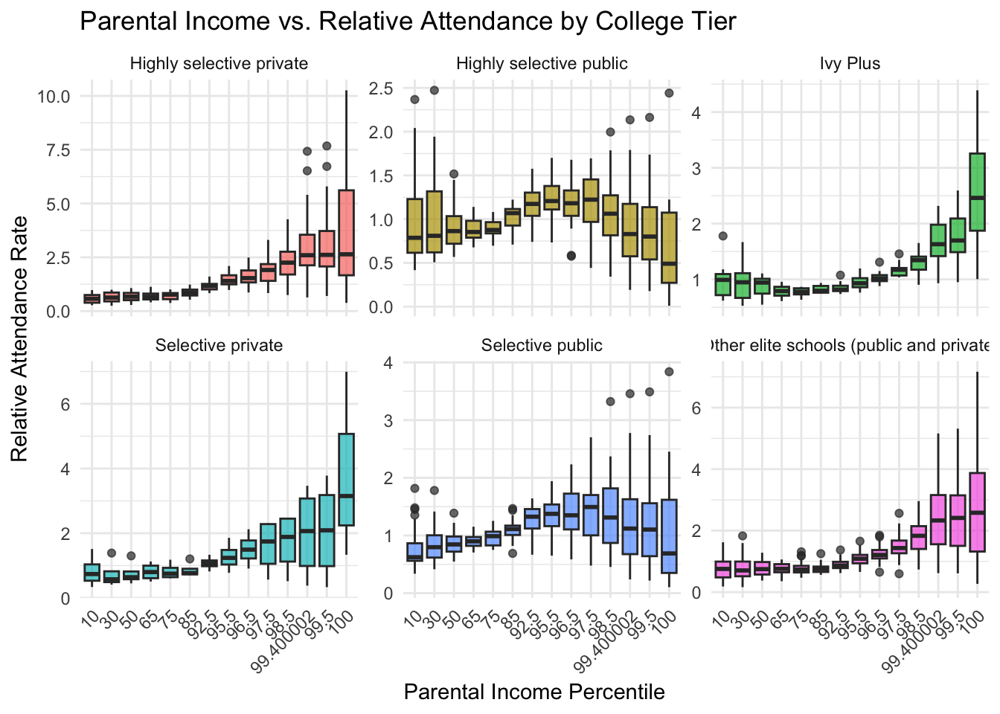

Exploring trends in college admissions using TidyTuesday data.
Author
Lilian Hu
Published
February 12, 2025
Introduction
Higher education has long been seen as a gateway to economic opportunity, yet access to top-tier institutions remains highly stratified by socioeconomic status. This analysis explores the relationship between parental income and college attendance rates across different tiers of higher education, including Ivy Plus schools, highly selective public and private colleges, and other elite institutions. Understanding these patterns is crucial for evaluating whether higher education promotes upward mobility or reinforces existing economic inequalities. By analyzing data from the TidyTuesday College Admissions data set, this study seeks to uncover whether students from lower-income backgrounds have equitable access to prestigious institutions and what structural barriers may contribute to disparities in attendance rates. These findings can inform discussions around financial aid policies, admissions practices, and broader efforts to make higher education more accessible to all.
The data set used in this analysis comes from The data set used in this analysis comes from TidyTuesday. The original source of the College Admissions data set is the Opportunity Insights project via an article, which provides data on the relationship between parental income and higher education access. This data set includes information on college attendance rates across different income percentiles, categorized by institution selectivity. By leveraging this data, we aim to quantify the disparities in college access and analyze how income influences educational opportunities.
Load the Data set
library(tidyverse)
── Attaching core tidyverse packages ──────────────────────── tidyverse 2.0.0 ──
✔ dplyr 1.1.4 ✔ readr 2.1.4
✔ forcats 1.0.0 ✔ stringr 1.5.1
✔ ggplot2 3.5.1 ✔ tibble 3.2.1
✔ lubridate 1.9.3 ✔ tidyr 1.3.0
✔ purrr 1.0.2
── Conflicts ────────────────────────────────────────── tidyverse_conflicts() ──
✖ dplyr::filter() masks stats::filter()
✖ dplyr::lag() masks stats::lag()
ℹ Use the conflicted package (<http://conflicted.r-lib.org/>) to force all conflicts to become errors
library(tidytuesdayR)
Warning: package 'tidytuesdayR' was built under R version 4.3.3
tuesdata <- tidytuesdayR::tt_load('2024-09-10')
---- Compiling #TidyTuesday Information for 2024-09-10 ----
--- There is 1 file available ---
── Downloading files ───────────────────────────────────────────────────────────
1 of 1: "college_admissions.csv"
college_admissions <- tuesdata$college_admissions
Analysis
The dataset used in this analysis examines the relationship between parental income percentile and relative college attendance rates across different tiers of higher education institutions. These tiers include Ivy Plus schools, highly selective public and private colleges, selective institutions, and other elite schools. The key question driving this analysis is: How does family income influence the likelihood of attending colleges of varying selectivity?
To explore this, I have visualized relative attendance rates by income percentile for each college tier using boxplots.
ggplot(college_admissions |>filter(!is.na(rel_attend) &!is.na(par_income_bin)) |>mutate(tier =factor(tier, levels =c("Highly selective private", "Highly selective public", "Ivy Plus", "Selective private", "Selective public", "Other elite schools (public and private)" ))), aes(x =as.factor(par_income_bin), y = rel_attend, fill = tier)) +geom_boxplot( alpha =0.7) +facet_wrap(~tier, scales ="free_y", ncol =3) +labs(title ="Parental Income vs. Relative Attendance by College Tier",x ="Parental Income Percentile", y ="Relative Attendance Rate") +theme_minimal() +theme(axis.text.x =element_text(angle =45, hjust =1), legend.position ="none")

Results
The boxplot visualization reveals that students from wealthier backgrounds disproportionately attend elite institutions, particularly in the Ivy Plus, Highly Selective Private and Other Elite Schools categories. At the highest income percentiles of 99+, attendance rates spike, emphasizing the advantage that students from affluent families have in accessing top-tier universities. This suggests that financial resources, and social capital play a critical role in shaping educational opportunities.
In contrast, highly selective public universities exhibit a more balanced distribution of attendance rates across income groups. Middle-income students (percentiles 40-80) appear to have the highest representation, suggesting that public institutions may provide more accessible pathways for students from diverse socioeconomic backgrounds. This highlights the importance of state-funded institutions in maintaining equity in higher education, as they serve a broader population than elite private schools.
The analysis also indicates that Selective Public and Selective Private colleges show a relatively even distribution of attendance rates across income levels, though a slight increase is still observed among higher-income students. These institutions, while still influenced by socioeconomic factors, appear to be more accessible than Ivy Plus or elite private schools.
The most striking disparities emerge above the 95th percentile, where attendance at elite institutions surges dramatically. This supports prior research that suggests that wealthier families have access to significant advantages such as early educational resources, private test preparation, and legacy admissions, all of which contribute to the over representation of high-income students at top universities.
Discussion
These findings underscore the structural barriers that lower-income students face when trying to access elite education. While highly selective public schools provide relatively better opportunities, the overall trend still indicates that socioeconomic background plays a determining role in college access. Addressing these disparities requires stronger financial aid programs, increased outreach efforts, and potential reforms in legacy admissions policies. Additionally, further research could explore how financial aid impacts attendance rates over time or examine the long-term effects of socioeconomic stratification in higher education.
Overall, this analysis highlights the persistent inequalities in college admissions and emphasizes the need for policies that promote greater access and equity in higher education.